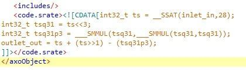

Hi there, so i am trying to understand fully what is going on inside this object in the hopes of adapting some already written C++ code to work with the axoloti. I havnt yet come across the SMMUL function but have read the description of them in getting started but might need to have it explained in relation to something to properly underdstand, also nothing is really mentioned about the ___SSAT function which is used here.
In terms of this object, could anybody help me break down what is actually going on here as i cant make much out just from looking at the code.
For example the first line "int32_t ts = _SSAT(inletin,28);" Im really having a hard time understanding what even this is saying. Is it something like declaring the inlet to be a 32bit integer called 'ts', but unsure as to what the SSAT and the 28 are doing here.

Any help would be very much appreciated, thanks!